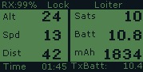

Common Failsafes¶
This is a list of the most common failsafes
GPS lock/HDOP¶
The ‘GPS lock/HDOP’ error results from obstructed vision to the sky (thus too few satellite locks). In order to pass the HDOP or GPS lock failsafes move the Iris + to an area with high sky visibility. Once the Iris + has five or more satellite locks it should no longer give this error
Bad Velocity¶
The ‘Bad Velocity’ error results from the Iris + being connected (plugging in the battery) on an inclined surface. The vehicle will not pass this failsafe until connected on a flat surface.
Gyro Cal Failed¶
The ‘Gyro Cal Failed’ error results from the Iris + being moved during startup. Generally this failsafe will occur after the battery is plugged in and the user forcefully closes the rear battery compartment.
Proper Startup Procedure¶
- Take the Iris + to an open area with clear view of the sky.
- Place the Iris + on level ground and open up the battery compartment.
- Connect the battery and wai tuntil the rear LED turns to green.
- Close the battery compartment and prepare to arm the motors.